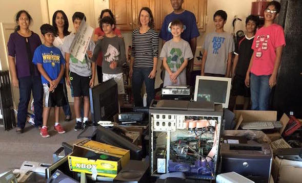
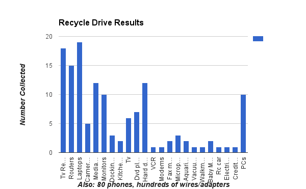

Recycling 1000 lbs of Ewaste in 3 Hours!
We did it with Social Technology
| End of the drive | Stuff collected |
|---|---|
|  |  |
Summary
We learned a great deal from our E-waste recycling project. Please read our report for details. Our findings are summarized below.
What works well
- Use technology, specifically social media
- Our recycling drive on Saturday morning, January 30, 2016 netted hundreds of pieces of E-waste, weighing over 1000 lbs
- We had over 60 people dropoff their E-waste - almost 10% of our community
- A large number of them knew about our drive because of our website, Facebook page, and posting to the community mailing list
- Low tech solutions can be effective
- About a third of our collections came from people who saw one of the 8 yard signs we had placed in the neighborhood
What does not work
- We placed a locked dropbox in the school library, but only collected 3 phones in it in a week.
- We advertised it very heavily, far more than the drive.
- The City of Austin told us not many people use the dropboxes they have placed in libraries. (This is what we also observed from looking at the box in our library.)
- Convenience is key - we gave instructions on how to recycle on your own, but the distances involved meant that very few people actually went to the City’s recycling center.
- When we went to dropoff the E-waste we collected on a Saturday morning, we saw one person come by in the 40 minutes we were there, with a small plastic bag containing an old phone and charger. (Note that Saturday morning is primetime for dropping off.)
You can clone our materials - posters for the drive (Google Docs Drawing), our articles on recycling, and the format we followed - to organize your own drive.